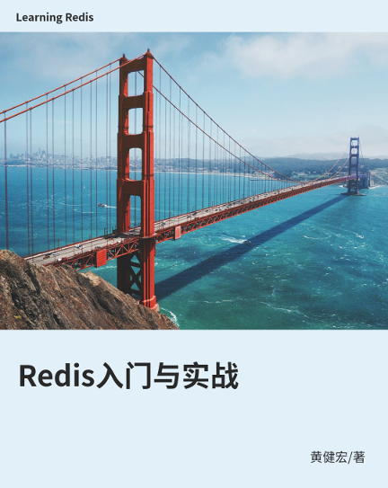

《Redis入门与实战》¶
{kind=link}
欢迎来到《Redis入门与实战》的读者服务网站！
《Redis入门与实战》的目的是向 Redis 初学者以及使用者传授最新、最实用的 Redis 知识， 帮助他们了解 Redis 并学会如何使用 Redis 。 书本基于最新的 Redis 6.0 版本创作， 覆盖 Redis 最重要、最核心的特性， 掌握这些特性将帮助读者从 Redis 新手进阶至熟练的 Redis 使用者， 而有经验的 Redis 使用者也可以通过这本书了解到 Redis 6.0 的最新特性。
如果你刚刚开始接触 Redis ， 又或者想要进一步加深你的 Redis 基础知识， 那么这本《Redis入门与实战》将是你不容错过的一本书。
特色¶
基于 Redis 6.0 版本全新创作， 覆盖 Redis 6 包括多线程 I/O 、访问控制列表、传输层安全性协议、Redis 集群代理在内的众多新特性。
精心编排的内容和知识点， 250 页左右的精炼篇幅， 让你花最少的时间就能够了解到 Redis 最核心的特性。
创新的“实战演练”项目， 让你能够立即将学到的 Redis 知识投入实践， 而不是仅仅停留在纸面上。
赏心悦目的图片， 精心设置的表格， 极具特色的示例代码， 带给你耳目一新的阅读体验。
由国内著名 Redis 布道者黄健宏创作， Redis 入门信心之选。
目录¶
前言
小试牛刀
数据结构
字符串
散列
列表
集合
有序集合
地理坐标键
流
数据管理、性能与安全
数据库
持久化
流水线、事务
多线程 I/O 与客户端缓存
访问控制列表
传输层安全性协议
服务器扩展
Lua 脚本
模块
复制
Sentinel
集群
集群代理
结语：新的旅程
附录
附录 A：安装 Redis 服务器及 redis-cli 客户端
附录 B：安装 redis-py 客户端
作者简介¶

本书作者黄健宏自 2011 年接触 Redis 起就一直在持续地学习和研究 Redis ， 并通过写书、翻译、讲授课程等方式与大家分享他了解到的 Redis 知识。
黄健宏是 《Redis设计与实现》 、 《Redis实战》 和 《Redis使用手册》 这三本畅销 Redis 图书的作者/译者。 他还长期翻译并维护着在线的中文 Redis 文档《Redis命令参考》， 这个文档每天都为数量众多的 Redis 使用者提供服务。
作为早期接触 Redis 并且一直深入研究 Redis 的技术人员， 黄健宏对 Redis 的应用和源码有深入的了解， 他希望通过这本《Redis入门与实战》向 Redis 初学者传授最实用的 Redis 知识， 帮助读者了解 Redis 并学会如何使用 Redis 。
关于黄健宏的更多信息可以在他的个人网站huangz.me上面找到。